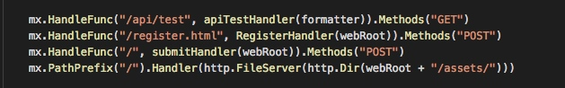
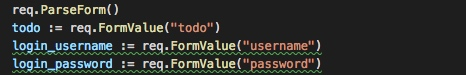
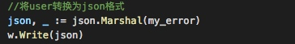
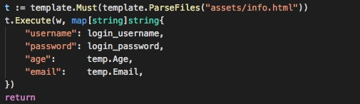
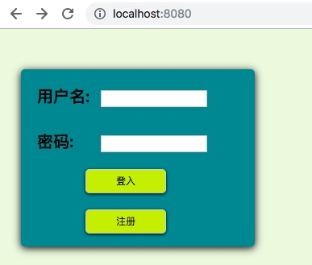
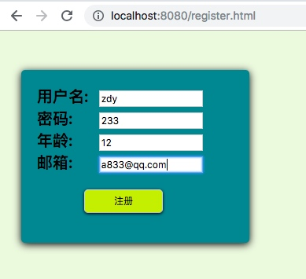
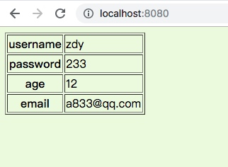
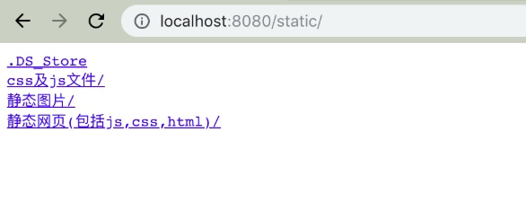
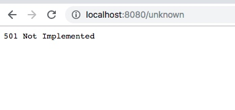

简单的web服务器#
这是一个简单的输出hello world！的web服务器，只用在客户端访问 http://localhost:9090/ 就可以获得响应内容。1 | package main |
这段代码很简单，就主要是是用了两个函数，首先调用http.HandleFunc()设置路由和响应处理函数，然后用http.ListenAndServe()去监听端口，就好了。
HandleFunc()分析#
http.HandleFunc()的定义，用来使用对应的函数。
1 | // HandleFunc registers the handler function for the given pattern. |
可以看出来上面就是用来mux.Handle函数，Http包默认的路由器：DefaultServeMux, 它的ServeMux的结构看起来好像很简单。
上述代码中，实现了Handler接口的ServeHTTP方法。使用HandlerFunc类型包装一下路由定义的indexHandler函数，其目的就是为了让这个函数也实现ServeHTTP方法，即转变成一个handler处理器(函数)。
1 | type ServeMux struct { |
ServeMux里最重要的应该就是m了，这个map的key是一些url模式，value是一个muxEntry结构，后者里定义存储了具体的url模式和handler。
根据HandleFunc的输入就可以，开始调用mux.Handle函数了。
1 | // Handle registers the handler for the given pattern. |
由此可见，Handle函数的主要目的在于把handler和pattern模式绑定到map[string]muxEntry的map上，其中muxEntry保存了更多pattern和handler的信息，
ListenAndServe()分析#
1 | func ListenAndServe(addr string, handler Handler) error { |
先实例化一个Server对象，然后调用 (Server) ListenAndServe()方法进行监听：
1 | func (srv *Server) ListenAndServe() error { |
函数 srv.Serve()函数启动一个for循环，然后在循环体中Accept请求，对每个请求实例化一个Conn，并且开启一个goroutine为这个请求进行服务go c.serve()。
1 | func (srv *Server) Serve(l net.Listener) error { |
搭建一个web服务器#
一个简单的服务器，所以就没有使用牛逼的框架，就用了老师给的 “github.com/codegangsta/negroni"、“github.com/gorilla/mux”、"github.com/unrolled/render” 这三个。
Server注册路由#
用HandleFunc给每种访问提供对应的处理路由。

表单处理#
通过PaeseForm，提取表单内部的数据值。

处理完回应#
将你的数据转化成页面写上去。


实现效果#
登入

注册，传表单

登入查看对应内容

静态文件服务

/unknown
